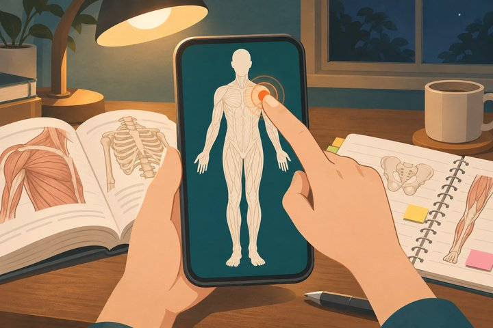

iPhone・iPad・Android 向け・解剖学と経穴の暗記
体の図を押して、
場所ごと覚える。
合谷はどこ？ 上腕二頭筋はどこから起こる？ 肩甲骨の下角はどこ？「さわる人体図」は、3D の解剖データから描いた体の図を指で押して答える暗記アプリです。経穴361・筋169・骨64（骨の部位404）の名前を、体の「どこにあるか」と一緒に覚えます。
App Store・Google Play で見る（準備中）有料アプリです。一度買えば、すべての機能が使えます。あとからお金はかかりません。広告もありません。

こんな困りごとのために作りました
名前は言えても、場所が出てこない
問題は「合谷はどこ？」。図を押して答えます。経穴は押した所の近さで、筋と骨は押した部品で判定し、正解の所を緑の輪で見せます。
絵だけで、部位の文が無い
経穴のカードには、部位の文（寸と目印）と図の点の両方。筋のカードには起始・停止・神経・作用。骨のカードには部位の一覧。
要穴の表を隠して覚えたい
五要穴・五兪穴・八会穴・八脈交会穴・下合穴・四総穴の表のマスを隠して、押してめくります。「合谷は何の原穴？」の問題も。
4択だと勘で当たる
一度当てた名前は、次から書いて答えます。漢字でも、読みのかなでも当たりです。
一覧や検索から飛べない
図のタブの上の検索（名前・読み・番号「LI4」・英語名）から、カード、図のその場所へ。経絡ごと・部位ごとの一覧からも。
縦画面・iPad・読み上げ
縦が基本で、iPad と iPhone Duo では図と問題を左右に並べます。VoiceOver のときは、図で答える問題が文の4択に切りかわります。
さわる人体図の流れ
まず1つ押す
筋の図で「大胸筋はどれ？」を押してみます。
試験を選ぶ
はり師・きゅう師／あん摩マッサージ指圧師・柔道整復師・理学療法士・作業療法士・看護師から選ぶと、その試験で問われるものが範囲になります。
毎日の1回
忘れかけているものがあれば復習から、なければ範囲のつづきから。10・20・30問。
仕上げ
範囲を一周したら、当てた割合が低い経絡・部位から仕上げます。
入っているもの
| 経穴 | 361穴（14経絡）。部位は WHO/WPRO 標準経穴部位（2008）と、それに準じた日本の教科書と同じ事実を、自分の言葉で書いています。要穴（原・絡・郄・募・兪・五兪穴・八会・八脈交会・下合・四総） |
|---|---|
| 筋 | 169。起始・停止・支配神経・髄節・作用 |
| 骨 | 64種と、骨の部位404（上角・烏口突起・大転子・内果など）を図の点で |
| 図 | 全身を前・後ろ・左・右から。筋・骨・経穴の3つの層。Z-Anatomy（BodyParts3D をもとにした 3D の解剖データ）から描いた本物の体のかたち |
できること
| 答え方 | 図を押す・4つから選ぶ・一度当てた名前は書いて答える |
|---|---|
| 復習 | 最後に答えてからの日数と、つづけて当てた回数で、忘れかけたものから先に出します |
| まちがいノート | まちがえたものが入り、3回つづけて当てると「克服」で外れます |
| 記録 | 続けた日・直近10週の表・14日の数・層ごとの覚えぐあい。iPhone・iPad はあなたの iCloud で同期 |
| ★ | 何度も確かめたい経穴・筋・骨に ★ を付けて、そこから解けます |
| 広告・課金・登録 | 広告なし・アプリ内課金なし・アカウント登録なし。開発者はデータを集めません |
よくある質問
国家試験の過去問は入っていますか
入っていません。経穴・筋・骨の場所と中身を覚えるためのアプリです。試験団体・学校・出版社の公式のアプリではなく、試験の出題を保証するものではありません。
経穴の部位はどの本に合わせていますか
WHO/WPRO 標準経穴部位（2008）と、それに準じた日本の教科書（経絡経穴概論）と同じ事実です。文は自分の言葉で書いています。ちがう所に気づいたら、下のお問い合わせから教えてください。
臨床で使えますか
学習のためのアプリです。施術や診断の判断には使わないでください。
iPad でも使えますか
使えます。iPad と iPhone Duo では、図と問題・カードを左右に並べて出します。
返金はできますか
返金は Apple・Google の規定に従います。App Store は reportaproblem.apple.com、Google Play は Google Play の注文履歴からお申し出ください。開発者が直接返金することはできません。
使い方のくわしい説明は 使い方とお問い合わせ にあります。
お問い合わせ
不具合や、部位・中身のまちがいに気づいたら、ryo.tsuzukihashi@tsuzukit.com までご連絡ください。作っているのは個人開発者の續橋涼（TsuzuKit）です。